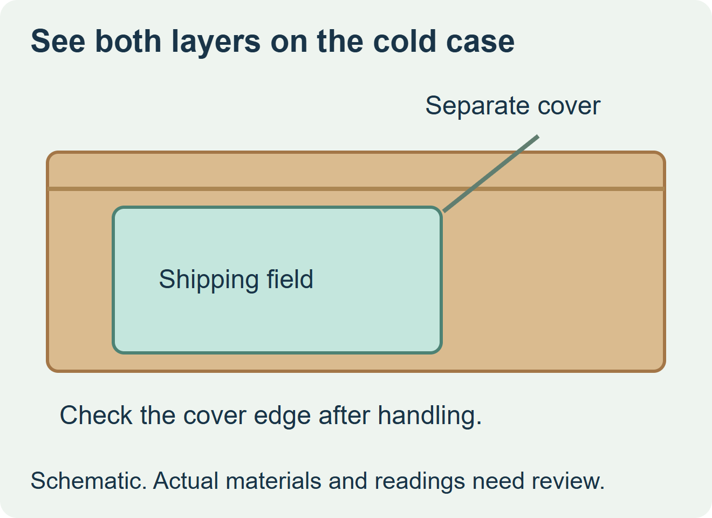
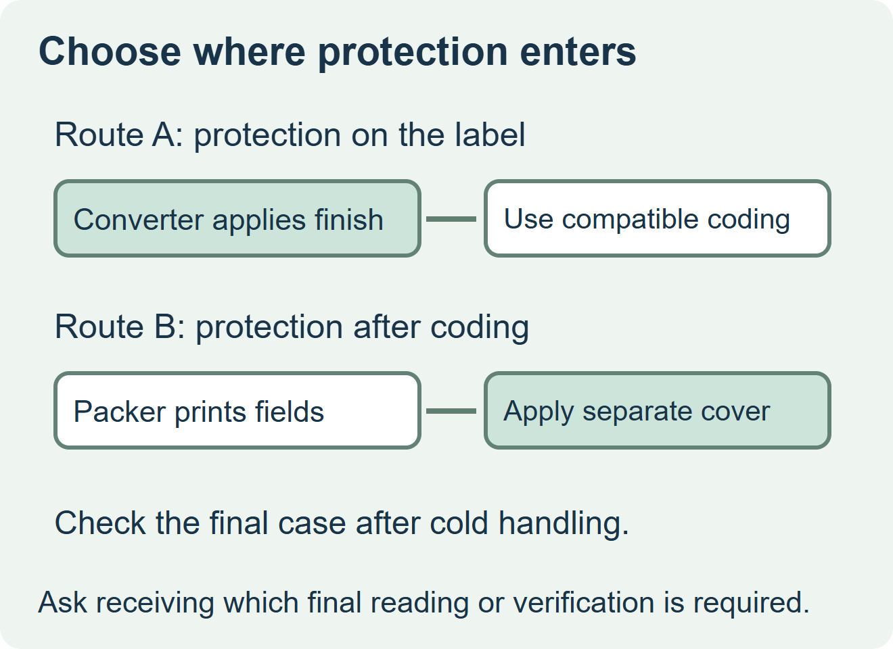

Buy the protection on the printed label if the converter can cover the required area and the coding step is compatible with that surface. Qualify a separate clear cover when the variable fields must be printed first and the line can place and inspect the cover consistently. Compare the actual packed cases after cold storage and handling.


Find out when the last character is printed
A preprotected face can remove a manual cover operation. If date, lot or dispatch data are added later, identify which surface receives that printing. A separate cover is one alternative when you cannot print onto the chosen protective finish. Have the receiving partner confirm the permitted label and cover arrangement before making it part of the packing instruction.
tesa discusses a specific embossed carton tape intended to reduce reflections in relevant reading conditions. A clear tape description alone cannot establish readability on the packed case. Review the proposed product and whether its adhesive and placement can be qualified at the actual application stage. tesa industrial food packaging examples
| Actual work sequence | Route to evaluate | Finished-case check |
|---|---|---|
| All required fields are present at the converter | Label supplied with finish in the approved areas | Check the printed area, edges and cold handling. |
| Packer adds variable fields and can print on the proposed protected face | Compatible supplied finish and packer printing | Check the final code on the actual coating or laminate. |
| Packer adds fields before protection | Separate identified cover under an approved placement step | Check wrinkles, raised seams, reflected light, cover bond and receiving view. |
| The added cover obstructs the field or catches during handling | Relocate the label or requalify the face construction | Inspect a complete case after the normal route. |


Inspect the cover and the label as a combined assembly
Make two samples on the intended case board. Keep the label position, printing and case handling comparable. Identify the cover edges, seams and any overlap with the flap or sealing tape. Inspect after the relevant cold exposure and normal handling. Record label bond to board, cover bond to label and whether the printed information remains readable. Ask the receiving partner how it checks the field and when any formal verification is needed.
In a hypothetical frozen-food dispatch, a case label prints clearly before the cover is applied. A raised cover edge crosses the reading area after the case is stacked. Rework only under the packer’s approved process and test the revised footprint. Compare that with a compatible label already protected at the converter. Include tape, placement and inspection work in the order comparison.
Put the final surface in the specification
Name the cover or finish, how much it covers, and when each step takes place. Request separate prices for a finished protected label and for any work the packer must add. Ask for representative evidence for the complete case route.
Discuss the unresolved label requirement
Send the actual board, application and freeze interval, printed sample, topcoat or cover product and coverage, reading position and quantity. Review food label options and prepare a label specification inquiry. The contact page opens an email draft and lists email or WhatsApp for attachments. Supply, proof options, testing, pricing and timing require project confirmation.